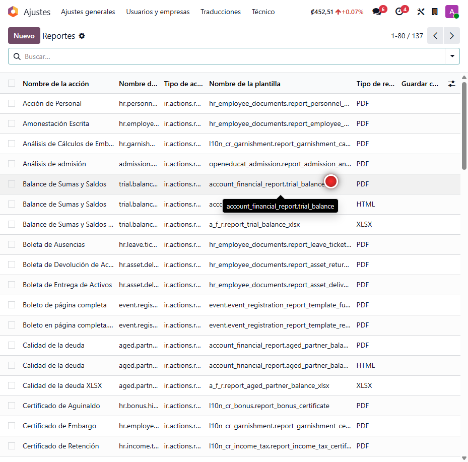
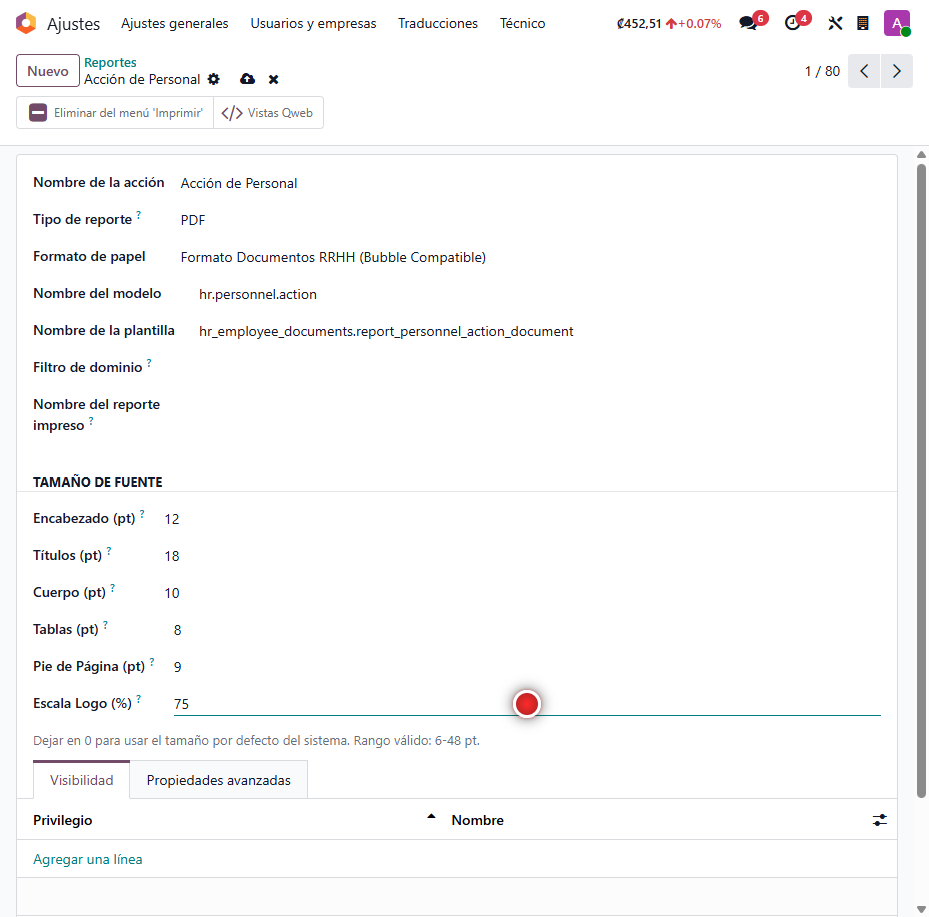

Tamaño de Fuente en Reportes
Ajustá el tamaño de letra de cada reporte de Odoo por separado —encabezado, títulos, cuerpo, tablas, pie de página y hasta la escala del logo— sin tocar plantillas ni depender de un diseñador. Ideal para que una factura extensa quepa en menos páginas o para dar más presencia a un documento oficial.
Capturas del proyecto
01 / 03


Los reportes de Odoo traen un tamaño de letra fijo que no siempre encaja
Cuando una factura tiene muchas líneas, la letra estándar hace que el documento crezca a varias páginas; y en documentos oficiales, a veces se necesita una tipografía más grande y legible. Cambiar esto normalmente exige editar las plantillas técnicas del reporte.
Este módulo agrega, en la ficha de cada reporte, una sección donde se define el tamaño de fuente de cada zona del documento y la escala del logo. La configuración es independiente por reporte y se aplica en la siguiente impresión, sin reiniciar el sistema ni programar nada.
Funcionalidades clave
-
Control por reporte
Cada documento tiene su propia configuración, sin afectar a los demás.
-
Seis zonas ajustables
Encabezado, títulos, cuerpo, tablas, pie de página y escala del logo.
-
Sin reinicios
Los cambios se aplican en la siguiente generación del PDF.
-
Rangos validados
Impide tamaños fuera de rango que dañarían el diseño del reporte.
-
Compatible con todo diseño
Funciona con los layouts de Odoo (Standard, Boxed, Bold, Wave y más).
Tecnología detrás del producto
¿Tus reportes necesitan ajustarse al detalle?
Configuro el tamaño de letra de cada documento para que tus reportes salgan como los necesitás.